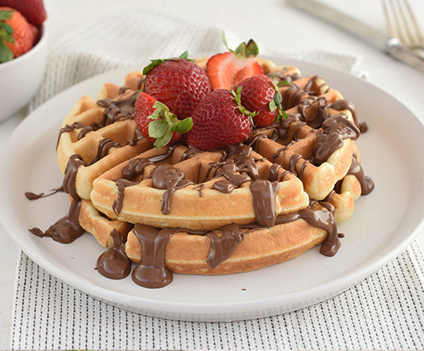

Waffles

Delicious, hot and fresh waffles
Make your morning shine with this delicious waffles recipe, fill your body with energy and have an incredible day.
This recipe is simple, quick, and... have I said it? Delicious!
Ingredients
- 2 large eggs
- 2 cups of all-purpose flour
- 1 3/4 cups of milk
- 1/2 cup of vegetable oil
- 1 tablespoon of white sugar
- 4 teaspoons of baking powder
- 1/4 teaspoon of salt
- 1/2 teaspoon of vanilla extract
- Nonstick cooking spray
Steps
- Preheat a waffle iron according to manufacturer's instructions.
- Whisk eggs in a large bowl until light and fluffy. Add flour, milk, and vegetable oil and mix to combine. Whisk in sugar, then mix in baking powder, salt, and vanilla just until smooth, being careful not to overmix.
- Spray the preheated waffle iron with nonstick spray. Pour batter onto the hot waffle iron and cook until golden brown and the iron stops steaming, 3 to 5 minutes.